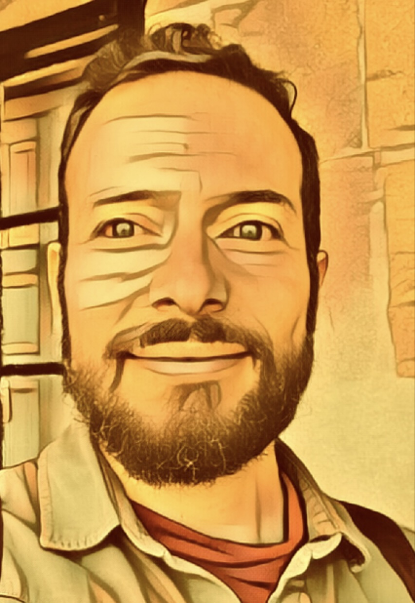

Raffaele Bini

Summary
Multipotencial Engineer, always looking for challenges and opportunities to learn because I want to improve myself every day, generate value for the people I relate to and inspire them to make themselves and the world better.
Education
- Master degree in Industry 4.0 Design - University of Pisa (2021-2022)
- Master degree in Integrated Management Systems - ISTUM (2016)
- Master degree in Mechanical Engineering - University of Florence (1998 - 2004)
Work Experience
-
Project Consultant - EDIH DATAlife
February 2024 - current
- Manage EU Projects
- Manage Digitalizasion Projects
- Digital Technology monitoring and dissemination
-
Technical Director - Generale Conserve Spa
January 2022 - Novembre 2023
- Operations and Technical Management
- Engineering, Maintenance and Technical Purchasing
- Safety, Health, Environment and Energy
- People development
-
Production Director - Illycaffé Spa
December 2018 - December 2021
- Production Management
- Maintenance Management
- Continuous Improvement
- People development
-
Factory Engineering Manager - Sanpellegrino Spa
December 2016 - November 2018
- Capital Investment Projects
- Maintenance and Spare Parts Management
- Continuous Improvement and TPM
- People development
-
Industrial Performance Manager - Sanpellegrino Spa
May 2013 - November 2016
- Lean Six Sigma Green Belt
- Operational Masterplanning
- Continuous Improvement
-
Factory Engineer - Sanpellegrino Spa
March 2011 - April 2013
- Capital Investment Projects
- Maintenance and Spare Parts Management
- Continuous Improvement
-
Production Supervisor - Sanpellegrino Spa
July 2010 - February 2011
- Production Management
- Quality and Food Safety
- Continuous Improvement
-
Quality System Manager - Sanpellegrino Spa
April 2008 - June 2010
- Quality
- Food Safety
- Management Systems
-
Project Manager - Sanpellegrino Spa
June 2005 - March 2008
- Project Management
- Change Managementy
- Training
Skills
- Lean Six Sigma: ⭐️⭐️⭐️⭐️⭐️
- Data Science & Python: ⭐️⭐️⭐️
- Organizational skills: ⭐️⭐️⭐️⭐️
- Digitalization: ⭐️⭐️⭐️⭐️
Awards and Certifications
- Master in Data Science - Start2Impact University (March 2024)
- Python for Machine Learning & Data Science Masterclass (March 2024)
- Master in Data ANalysis - Start2Impact University (May 2023)
- Lean Six Sigma Green Belt Certificate - Nestlé (May 2013)
- TPM Coach - Nestlé (October 2010)
Other